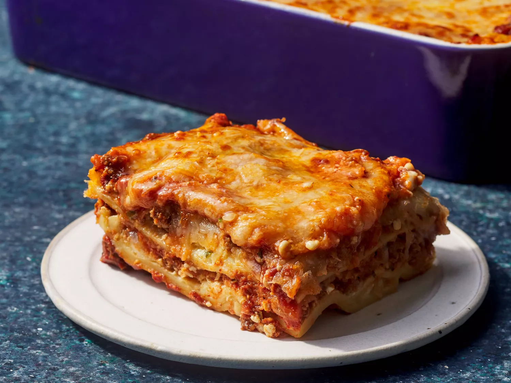

Lasagna
Home

Description
Lasagna is a baked pasta dish of Italian origin, typically made with wide, flat pasta sheets layered with fillings like meat sauce, béchamel, vegetables, and various cheeses.
Ingredients
- 1 pound sweet Italian sausage
- 3/4 pound lean ground beef
- 1/2 cup minced onion
- 2 cloves garlic, crushed
- 1 (28 ounce) can crushed tomatoes
- 2 (6 ounce) cans tomato paste
- 2 (6.5 ounce) cans canned tomato sauce
- 1/2 cup water
- 2 tablespoons white sugar
- 1 1/2 teaspoons dried basil leaves
- 1/2 teaspoon fennel seeds
- 1 teaspoon Italian seasoning
- 1 tablespoon salt
- 1/4 teaspoon ground black pepper
- 4 tablespoons chopped fresh parsley
- 12 lasagna noodles
- 16 ounces ricotta cheese
- 1 egg
- 3/4 teaspoon salt
- 3/4 pound mozzarella cheese, sliced
- 3/4 cup grated Parmesan cheese
Directions
- Cook the meat: Cook the ground meat in a skillet until browned and crumbly. Add the onion and continue cooking until it's translucent. Stir in the canned tomato products, half of the parsley, garlic, basil, 1.5 teaspoons of salt, oregano, and sugar.
- Simmer: Cover and simmer for about 1.5 hours, stirring occasionally.
- Boil the noodles: Boil the lasagna noodles in a large pot with boiling salted water until al dente. Drain and rinse with cold water.
- Prepare the cheese mixture: In a mixing bowl, combine the ricotta cheese with the egg, remaining parsley, and 3/4 teaspoon of salt.
- Assemble the lasagna: Preheat the oven to 375 degrees F (190 degrees C). Spread 1.5 cups of meat sauce in the bottom of a 9x13-inch baking dish. Arrange 6 noodles lengthwise over the meat sauce. Spread with half of the ricotta cheese mixture. Top with a third of mozzarella cheese slices. Spoon 1.5 cups of meat sauce over mozzarella, and sprinkle with 1/4 cup Parmesan cheese. Repeat layers, and top with remaining mozzarella and Parmesan cheese. Cover with foil: to prevent sticking, either spray foil with cooking spray, or make sure the foil does not touch the cheese.
- Bake: Bake in preheated oven for 25 minutes. Remove foil, and bake an additional 25 minutes. Cool for 15 minutes before serving.